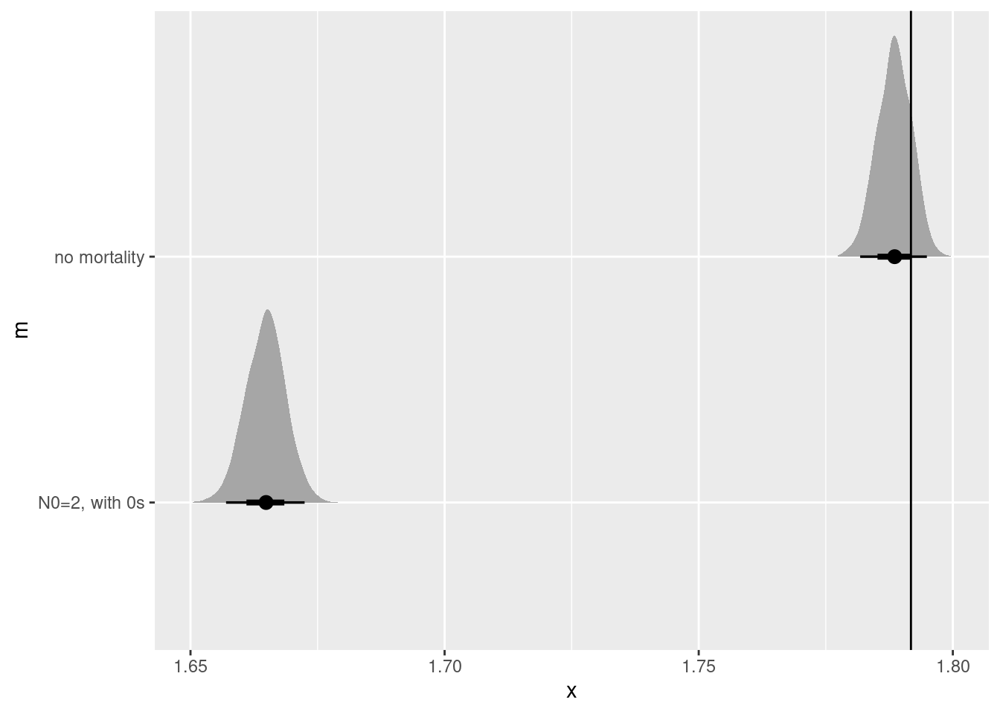
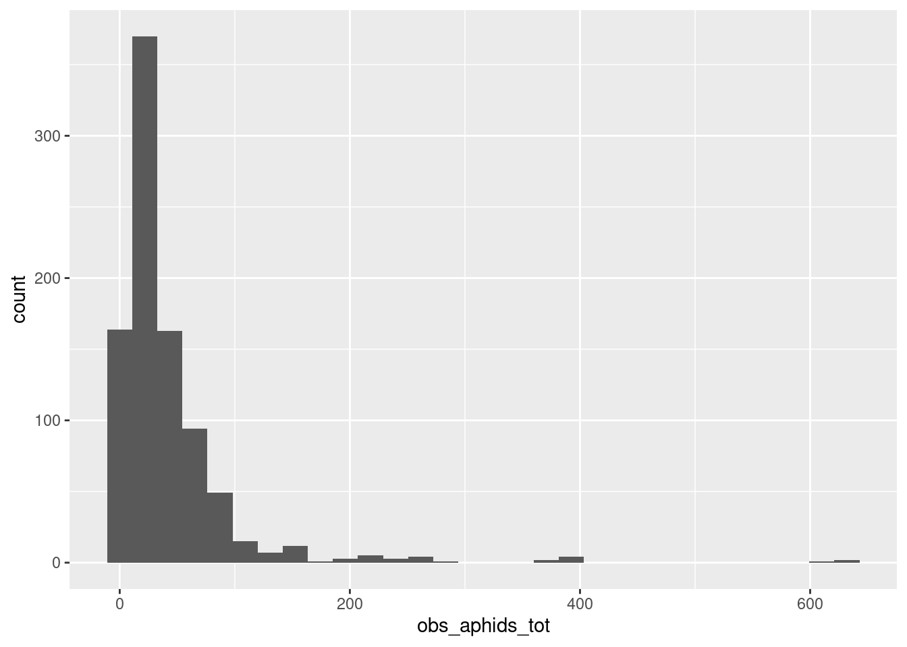
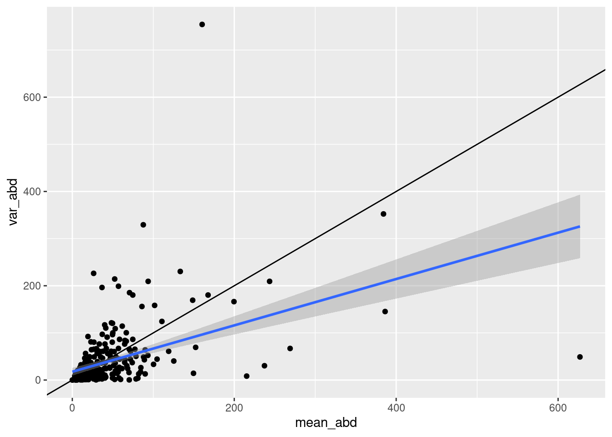
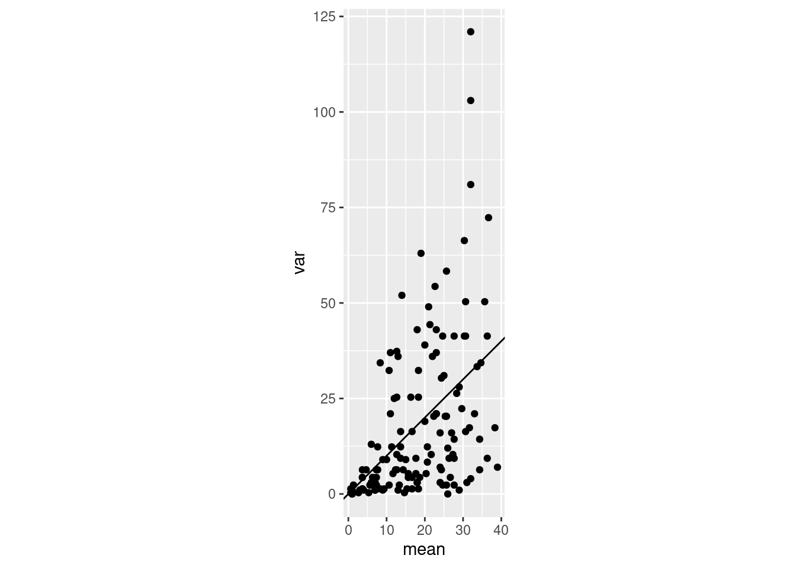
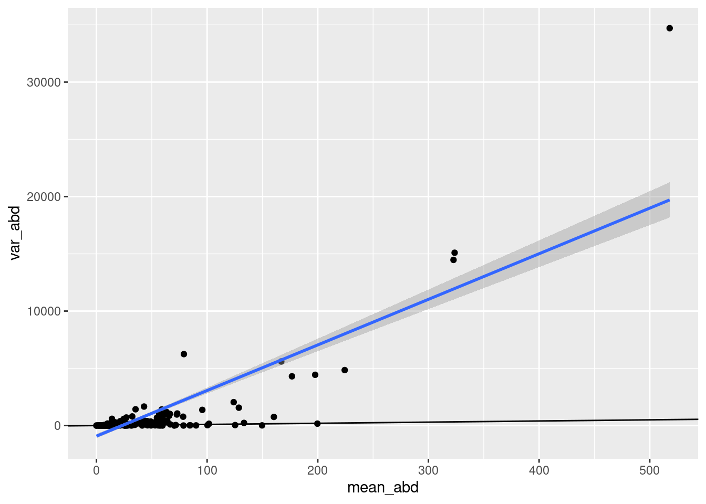

library(targets)
library(ggplot2)
library(tidyverse)
library(tidybayes)
suppressPackageStartupMessages(library(brms))The question
When placed on a host place in a nice environment with no enemies, aphids produce new aphids exponentially.[to me they seem to be bacteria with legs]{/aside} But host plants are not all good food, and on some aphids grow poorly – but on others they grow well.
What is the growth rate of these aphids on different host plants? What proportion of total variance can be assigned to genotype?
The design
A large number of genotypes are chosen, three replicates per genotype. Each plant grown alone and is “inoculated” with two aphid nymphs. At the end of 2 weeks we count all the aphids, and model growth rate by the classic exponential
\[ y \sim \text{Poisson}(2e^{rt}) \] and using 2 for the time parameter to get the weekly population growth rate.
Poisson or?
I feel like there are probably multiple ways to model the observation error of population growth, and Poisson is only one. EC Pielou gives another in her book, deriving a distribution for the population size of a growing population that is based on the Binomial distribution. Here I’m going with Poisson, but another post could explore another technique!
The problem
At the end of the experiment, we see that there are a suprisingly large number of zeros – some plants have no aphids on them! And there’s another surprising detail: when we calculate the mean and variance of aphid population size for each genotype, we find they have a negative relationship. This is surprising because normally when the average of a count is high, the variance is higher too!
What’s going on?
The probability of death-by-experimenter ( \(m\) )
Maybe the aphids don’t survive transfer to the host plant at the start. After all, in order to maximize the impact of the host plant on the female, the experimenters started them at as early an age as possible. I’ll say that the probability of being killed in transfer is \(m\). That means that by the time the aphids start reproducing, the plants can be put in three categories in three proportions:
- \(m^2\) plants have no aphids (both died)
- \(2m(1-m)\) plants have ONE aphid
- \((1-m)^2\) plants have both aphids
Right away, that suggests a sort of artisanal mixture model for the aphid population sizes:
\[ \begin{align} \text{Pr}(Y=0|m,r) &\sim m^2 + 2m(1-m)\times\text{Poisson}(0|e^{rt}) + (1-m)^2\times\text{Poisson}(0|2e^{rt}) \\ \text{Pr}(Y=y|m,r) &\sim 2m(1-m)\times\text{Poisson}(y|e^{rt}) + (1-m)^2\times\text{Poisson}(y|2e^{rt}) \\ m &\sim \text{Beta}(2,5) \\ r &\sim \text{Normal}(1.5, 2) \\ \end{align} \] I guess you could call this a “zero-inflated mixture of Poissons”. But the name doesn’t matter as much, what is interesting it that it follows logically from the experimental situation described.
some observations about this model
- I feel like this notation (and the model code) would be “tighter” if you replace \(Pois(0|e^{rt})\) with the probability of zero in a poisson distribution: \(e^{-\lambda}\) which in this case would be $e{-e{rt}}. But I also think that would make the model less readable, which is a BAD thing!
- We decided to use a Normal prior for r since it is possible to be both negative or positive. Most of the prior probability in this model is positive, though, because these animals are supposed to do well on these plants!
- I suppose you could give \(m\) a logit link and model it as caused by different factors, such as the experimenter who transferred the immature insects at the start, or maybe even something about the host plants. However, here we’re treating it as a constant!
Simulation study: identical hosts
The goal is the same as always: simulate the data-generating process and see if models can fit it! I try lots of things here, and eventually build up to fitting and testing the model i just described in a Stan program, and then in a brms workflow.
Exponential growth, no mortality: simplest model
Here is a simple model of exponential population growth with poisson variation, just to confirm it works as I thought it would
\[ \begin{align} \text{abd} &\sim \text{Poisson}(N_0e^{rt}) \\ r &\sim \text{Normal}(1.5,.2) \\ \end{align} \]
In all the stan code that follows, you’ll see that I’ve written this on the log scale. I have a few reasons for doing this. One is that population growth rates are usually modelled as a log ratio, so this keeps the code looking more like the R scripts used for this kind of problem. Another is that this is a parameterization of the Poisson available in Stan, which is a bit more efficient
\[ \begin{align} \text{abd} &\sim \text{PoissonLog}(\ln{N_0} + rt) \\ r &\sim \text{Normal}(1.5,.2) \\ \end{align} \] Here is a simulated dataset for plenty of replicate clones:
nrep <- 300
r <- log(6)
aphid_data <- expand_grid(rep_id = 1:nrep, first_aphid = 1:2) |>
# expected aphids per aphid (No = 1)
mutate(expect_aphids = 1*exp(r*2),
obs_aphids = rpois(n = length(expect_aphids), lambda = expect_aphids))
# combine the two aphids per plant
aphid_data_sum <- aphid_data |>
group_by(rep_id) |>
summarize(obs_aphids = sum(obs_aphids))
ggplot(aphid_data_sum, aes(x = obs_aphids)) +
geom_histogram()`stat_bin()` using `bins = 30`. Pick better value with `binwidth`.
Here’s the same model, written as a Stan program
simple_growth <- cmdstanr::cmdstan_model(here::here(
"posts/2025-03-12-useful-zeros/simple_growth.stan"))
simple_growth data{
int n;
real time;
real N0;
array[n] int abd;
}
parameters {
real r;
}
model {
r ~ normal(1.5, 2);
abd ~ poisson_log(log(N0) + r*time);
}simple_growth_post <- simple_growth$sample(
data = list(n = nrow(aphid_data_sum),
N0 = 2,
time = 2,
abd = aphid_data_sum$obs_aphids),
refresh = 0)Running MCMC with 4 sequential chains...
Chain 1 finished in 0.0 seconds.
Chain 2 finished in 0.0 seconds.
Chain 3 finished in 0.0 seconds.
Chain 4 finished in 0.0 seconds.
All 4 chains finished successfully.
Mean chain execution time: 0.0 seconds.
Total execution time: 0.6 seconds.bayesplot::mcmc_areas(x = simple_growth_post$draws(), pars = "r") +
geom_vline(xintercept = r, col = "red", size = 1) +
# coord_cartesian(xlim = c(r*.99, r*1.01)) +
NULLWarning: Using `size` aesthetic for lines was deprecated in ggplot2 3.4.0.
ℹ Please use `linewidth` instead.Exponential growth, but with transfer mortality
As described above, we don’t live in an easy world. We live in a world where aphids die sometimes as you transfer them. What does the data look like in that case? Let’s say that you kill about 20% (a .8 chance of surviving).
aphid_data_surv <- aphid_data |>
mutate(surv = rbinom(n = length(first_aphid), size = 1, prob = .8),
obs_aphids = obs_aphids*surv) |>
# filter(surv == 1) |>
group_by(rep_id) |>
summarize(obs_aphids = sum(obs_aphids),
n=n(),
No = sum(surv))
aphid_data_surv |>
ggplot(aes(x = obs_aphids)) +
geom_histogram() +
labs(x = "Observed aphids")`stat_bin()` using `bins = 30`. Pick better value with `binwidth`.Alternative models
I have already described the mixture model above, but I want to compare this model with a few other possibilities:
- Ignore the problem and fit a model with \(N_0 = 2\)
- Drop all 0 abundances, and fit the \(N_0 = 2\) model to the non-zero numbers
- though experiment imagine we know the starting sizes for all the populations (perhaps thanks to observations made a few days after the start of the experiment).
- add an observation-level random effect (on the log scale) to compensate for the variance introduced by the unpredictable starting densities.
Rather than write all these out in math, I’m just going to show the code for each!
For the first two listed above, we can reuse the original model and just change the data that goes in. The model is L
simple_growthdata{
int n;
real time;
real N0;
array[n] int abd;
}
parameters {
real r;
}
model {
r ~ normal(1.5, 2);
abd ~ poisson_log(log(N0) + r*time);
}Another possibility is that we know the starting population size. This of course means modifying the model to let the starting population size be data instead:
simple_growth_knownN0 <- cmdstanr::cmdstan_model(
here::here("posts/2025-03-12-useful-zeros/simple_growth_knownN0.stan"))
simple_growth_knownN0 data{
int n;
real time;
vector[n] N0;
array[n] int abd;
}
parameters {
real<lower=0> r;
}
model {
abd ~ poisson_log(log(N0) + r*time);
}Finally we have an observation level random effect (OLRE) which is often used to model an overdispersed poisson. On the log scale, the starting population size becomes the intercept of the linear model. The random effect for each row might help represent the extra variation caused by the intercept having unpredictably values (that is, 2, 1, or 0):
simple_growth_olre <- cmdstanr::cmdstan_model(here::here(
"posts/2025-03-12-useful-zeros/simple_growth_olre.stan"))
simple_growth_olre data{
int n;
real time;
real N0;
array[n] int abd;
}
parameters {
real r;
real<lower=0> sigma;
vector[n] obs_z;
}
transformed parameters {
vector[n] obs_i = obs_z*sigma;
}
model {
obs_z ~ std_normal();
sigma ~ exponential(3);
r ~ normal(1.7, .2);
abd ~ poisson_log(log(N0) + r*time + obs_i);
}Fitting and comparing each model
simple_growth_mortality_post <- simple_growth$sample(
data = list(n = nrow(aphid_data_surv),
N0 = 2,
time = 2,
abd = aphid_data_surv$obs_aphids),
refresh = 0)Running MCMC with 4 sequential chains...
Chain 1 finished in 0.0 seconds.
Chain 2 finished in 0.0 seconds.
Chain 3 finished in 0.0 seconds.
Chain 4 finished in 0.0 seconds.
All 4 chains finished successfully.
Mean chain execution time: 0.0 seconds.
Total execution time: 0.5 seconds.no_mort_r <- simple_growth_post |>
tidybayes::spread_rvars(r) |>
mutate(m = "no mortality")
N02_0s_r <- simple_growth_mortality_post |>
tidybayes::spread_rvars(r) |>
mutate(m = "N0=2, with 0s")
bind_rows(no_mort_r, N02_0s_r)|>
ggplot(aes(y = m, dist = r)) +
stat_halfeye() +
geom_vline(xintercept = r)
aphid_no0 <- aphid_data_surv |>
filter(No >0)
simple_growth_dropzero_post <- simple_growth$sample(
data = list(n = nrow(aphid_no0),
N0 = 2,
time = 2,
abd = aphid_no0$obs_aphids),
refresh = 0)Running MCMC with 4 sequential chains...
Chain 1 finished in 0.0 seconds.
Chain 2 finished in 0.0 seconds.
Chain 3 finished in 0.0 seconds.
Chain 4 finished in 0.0 seconds.
All 4 chains finished successfully.
Mean chain execution time: 0.0 seconds.
Total execution time: 0.5 seconds.no_mort_r <- simple_growth_post |>
tidybayes::spread_rvars(r) |>
mutate(m = "no mortality")
N02_0s_r <- simple_growth_mortality_post |>
tidybayes::spread_rvars(r) |>
mutate(m = "N0=2, with 0s")
N02_drop0_r <- simple_growth_dropzero_post |>
tidybayes::spread_rvars(r) |>
mutate(m = "N0=2, drop 0s")
## known N0
simple_known_N0_post <- simple_growth_knownN0$sample(
data = list(n = nrow(aphid_no0),
N0 = aphid_no0$No,
time = 2,
abd = aphid_no0$obs_aphids),
refresh = 0)Running MCMC with 4 sequential chains...
Chain 1 finished in 0.0 seconds.
Chain 2 finished in 0.0 seconds.
Chain 3 finished in 0.0 seconds.
Chain 4 finished in 0.0 seconds.
All 4 chains finished successfully.
Mean chain execution time: 0.0 seconds.
Total execution time: 0.5 seconds.known_N0_r <- simple_known_N0_post |>
tidybayes::spread_rvars(r) |>
mutate(m = "N0 known, with 0s")
## Observation level random effect
simple_growth_olre_post <- simple_growth_olre$sample(
data = list(n = nrow(aphid_data_surv),
N0 = 2,
time = 2,
abd = aphid_data_surv$obs_aphids),
refresh = 0, parallel_chains = 4)Running MCMC with 4 parallel chains...
Chain 4 finished in 1.0 seconds.
Chain 1 finished in 1.1 seconds.
Chain 2 finished in 1.1 seconds.
Chain 3 finished in 1.1 seconds.
All 4 chains finished successfully.
Mean chain execution time: 1.1 seconds.
Total execution time: 1.2 seconds.olre_r <- simple_growth_olre_post |>
tidybayes::spread_rvars(r) |>
mutate(m = "OLRE, with 0s")
bind_rows(no_mort_r,
N02_0s_r,
N02_drop0_r,
known_N0_r,
olre_r)|>
ggplot(aes(y = m, dist = r)) +
stat_halfeye() +
geom_vline(xintercept = r)None of these work particularly well, though I’m truly surprised that the observation level random effect created such a biased estimate! Is there anything short of knowing the true value a the start of the experiment that could help us?
Estimating mortality and mixtures
Here is the mixture model from earlier, expressed in Stan
mixture_growth <- cmdstanr::cmdstan_model(
here::here("posts/2025-03-12-useful-zeros/mixture_growth.stan"))
mixture_growth data{
int n;
real time;
// real N0;
array[n] int abd;
}
parameters {
real r;
real<lower=0,upper=1> m;
}
model {
m ~ beta(3,3);
r ~ normal(1.8, .2);
for (i in 1:n) {
if (abd[i] == 0) {
target += log_sum_exp(
[
2*log(m),
log(2)+log(m)+log1m(m)
+ poisson_log_lpmf(abd[i] | r*time),
2*log1m(m)
+ poisson_log_lpmf(abd[i] | log(2) + r*time)
]
);
} else {
target += log_sum_exp(
log(2)+log(m)+log1m(m)
+ poisson_log_lpmf(abd[i] | r*time),
2*log1m(m)
+ poisson_log_lpmf(abd[i] | log(2) + r*time)
);
}
}
}mixture_growth_post <- mixture_growth$sample(
data = list(n = nrow(aphid_data_surv),
time = 2,
abd = aphid_data_surv$obs_aphids),
refresh = 0, parallel_chains = 4)Running MCMC with 4 parallel chains...
Chain 1 finished in 0.5 seconds.
Chain 2 finished in 0.5 seconds.
Chain 3 finished in 0.5 seconds.
Chain 4 finished in 0.6 seconds.
All 4 chains finished successfully.
Mean chain execution time: 0.5 seconds.
Total execution time: 0.7 seconds.mixture_r <- mixture_growth_post |>
tidybayes::spread_rvars(r) |>
mutate(m = "mixture")
bind_rows(no_mort_r,
N02_0s_r,
N02_drop0_r,
known_N0_r,
olre_r,
mixture_r)|>
ggplot(aes(y = m, dist = r)) +
stat_halfeye() +
geom_vline(xintercept = r)Simulate the experimental design
multiple clones
In the actual experiment there will be a large number of clones, with 3 replicates in each. (The actual experiment also includes a block ID that is crossed with genotype, but I’m leaving that out of this simulation because here I’m just focused on correctly estimating the average growth rate. In a later post I might try to extend this model to include that detail also!)
ngenotypes <- 300
rep_per_geno <- 3
r_bar <- 1.3
r_sd <- .5
r_geno <- rnorm(n = ngenotypes, mean = r_bar, sd = r_sd)
curve(1*exp(r_bar*x), xlim = c(0,2.5), lwd = 2)
walk(r_geno, ~curve(exp(.*x), add = TRUE, lwd = .5))curve, to illustrate how variation among genotypes creates differences in exponential growth.Now its time to simulate the design:
## project the growth of each original female
aphid_clone_data <- expand_grid(
rep_id = 1:rep_per_geno,
clone_id = 1:ngenotypes,
first_aphid = 1:2,
) |>
mutate(
clone_r = r_geno[clone_id],
expect_aphids = 1*exp(clone_r*2),
obs_aphids = rpois(n = length(expect_aphids), lambda = expect_aphids)
)
## sum the offspring of each initial female into a total!
aphid_clone_total <- aphid_clone_data |>
group_by(rep_id, clone_id) |>
summarize(clone_r = unique(clone_r),
expect_aphids_tot = sum(expect_aphids),
obs_aphids_tot = sum(obs_aphids)) |>
ungroup()`summarise()` has grouped output by 'rep_id'. You can override using the
`.groups` argument.knitr::kable(head(aphid_clone_total))| rep_id | clone_id | clone_r | expect_aphids_tot | obs_aphids_tot |
|---|---|---|---|---|
| 1 | 1 | 0.8592557 | 11.15244 | 11 |
| 1 | 2 | 1.4512208 | 36.43715 | 33 |
| 1 | 3 | 2.4531072 | 270.25379 | 282 |
| 1 | 4 | 1.0450358 | 16.17099 | 14 |
| 1 | 5 | 1.4717657 | 37.96553 | 37 |
| 1 | 6 | 1.1723096 | 20.85860 | 24 |
aphid_clone_total |>
# filter(obs_aphids_tot>0) |>
mutate(clone_id = forcats::fct_reorder(
as.character(clone_id), obs_aphids_tot),
rgr = log(obs_aphids_tot/2)/2) |>
ggplot(aes(x = clone_id, y = rgr)) +
geom_point() +
labs(y = "Relative growth rate")
aphid_clone_total |>
ggplot(aes(x = obs_aphids_tot)) +
geom_histogram()`stat_bin()` using `bins = 30`. Pick better value with `binwidth`.
Results of a model without mortality: Relative growth rates of aphids at the end of the experiment, where genotypes are different in their growth rates.
Maybe not a Poisson after all
The figure above reveals a subtle problem with this Poisson model of population growth: it generates impossible predictions for population sizes. Specifically, its possible to draw a 0 or 1 by random chance from a Poisson distribution with a low mean. But we might want to consider that these aphid populations never actually decrease, for example because even the first-born aphids survive to the end of the experiment (which is only 2 weeks, in a controlled environment with no enemies and lots of resources). There are other ways of working with this, but the full exploration will have to be a different post!
aphid_clone_total |>
group_by(clone_id) |>
summarize(mean_abd = mean(obs_aphids_tot),
var_abd = var(obs_aphids_tot)) |>
ggplot(aes(x = mean_abd, y = var_abd)) + geom_point()+
geom_abline(slope = 1, intercept = 0) +
stat_smooth(method = "lm")`geom_smooth()` using formula = 'y ~ x'
Model fitting to recover parameters – no mortality
This calls for a model of growth that is hierarchical, so that individual host genotypes have thier own average growth rate:
simple_growth_hier <- cmdstanr::cmdstan_model(
here::here("posts/2025-03-12-useful-zeros/simple_growth_hier.stan"))
simple_growth_hierdata{
int n;
int nclone;
real time;
// real N0;
array[n] int abd;
array[n] int clone_id;
}
parameters {
real r_bar;
real<lower=0,upper=1> m;
real<lower=0> r_sd;
vector[nclone] r_z;
}
transformed parameters {
vector[nclone] r_i = r_bar + r_z*r_sd;
}
model {
// priors
m ~ beta(4,4);
r_bar ~ normal(1.8, .2);
r_sd ~ exponential(3);
r_z ~ std_normal();
for (i in 1:n) {
target += poisson_log_lpmf(abd[i] | log(2) + r_i[clone_id[i]]*time);
}
}Then we run the sampler on the data from the simulation. Remember that the true values for the parameters are
r_bar: 1.3r_sd: 0.5
simple_growth_hier_post <- simple_growth_hier$sample(
data = list(n = nrow(aphid_clone_total),
time = 2,
abd = aphid_clone_total$obs_aphids_tot,
nclone = max(aphid_clone_total$clone_id),
clone_id = aphid_clone_total$clone_id),
refresh = 0, parallel_chains = 4)Running MCMC with 4 parallel chains...
Chain 2 finished in 4.5 seconds.
Chain 3 finished in 5.7 seconds.
Chain 1 finished in 5.8 seconds.
Chain 4 finished in 5.8 seconds.
All 4 chains finished successfully.
Mean chain execution time: 5.4 seconds.
Total execution time: 5.9 seconds.simple_growth_hier_post$summary(variables = c("r_bar", "m", "r_sd")) |>
knitr::kable()| variable | mean | median | sd | mad | q5 | q95 | rhat | ess_bulk | ess_tail |
|---|---|---|---|---|---|---|---|---|---|
| r_bar | 1.2937220 | 1.294205 | 0.0314846 | 0.0339071 | 1.2404100 | 1.3444215 | 1.048016 | 60.30351 | 126.6434 |
| m | 0.4961621 | 0.494539 | 0.1653054 | 0.1791322 | 0.2279260 | 0.7654714 | 0.999813 | 6127.19256 | 3414.3892 |
| r_sd | 0.5051465 | 0.504177 | 0.0216511 | 0.0206089 | 0.4716005 | 0.5433092 | 1.053516 | 149.79032 | 249.8677 |
Looks like we’re getting pretty close!
Mean-variance relationships in the Poisson distribution
We often say things like “the mean and the variace of a Poisson are both equal to the parameter \(\lambda\), AKA the rate parameter”. But what does this really look like in a sample? Here is a little bit of purrr code that demonstrates what this looks like:
plot_poisson_meanvar <- function(n){
1:35 |>
rep(each = 4) |>
map(~rpois(n=n, .x ))|>
map_df(~tibble(mean = mean(.x),
var = var(.x))) |>
ggplot(aes(x = mean, y = var)) +
geom_point() +
geom_abline(intercept = 0, slope = 1) +
coord_fixed() +
# stat_smooth(method = "lm") +
NULL
}
plot_poisson_meanvar(n = 500)
plot_poisson_meanvar(n = 3)
Samples from the Poisson distribution, as \(\lambda\) increases. Sample size makes a big difference in what the mean-variance relationship looks like, and how clear it is. In these simulations I change the \(\lambda\) parameter from 1 to 35 in increments of 1, and repeat the sampling 4 times for each value of \(\lambda\). The only thing that is different is the sample size of each sample: either 500 samples (left) or only 3 (right).
It seems it can be pretty hard to establish a clear “expected” mean-variance relationship in a Poisson! That makes sense to me, since a variance is pretty hard to measure accurately.
Adding mortality
This section uses the same simulation from above but adds in the mortality during the transfer process, with a 20% chance of killing the aphid.
surv_prob <- .8
# go back to original and remove some aphids before summing
aphid_clone_mort_dat <- aphid_clone_data |>
mutate(surv = rbinom(length(obs_aphids), size = 1, prob = surv_prob),
obs_aphids_alive = obs_aphids * surv)
aphid_clone_mort_sum <- aphid_clone_mort_dat |>
group_by(clone_id, rep_id) |>
summarize(tot_aphids = sum(obs_aphids_alive))`summarise()` has grouped output by 'clone_id'. You can override using the
`.groups` argument.aphid_clone_mort_sum |>
summarize(mean_abd = mean(tot_aphids),
var_abd = var(tot_aphids)) |>
ungroup() |>
ggplot(aes(x = mean_abd, y =var_abd)) + geom_point() +
geom_abline(slope = 1, intercept = 0) +
stat_smooth(method = "lm") +
# coord_cartesian(xlim = c(0, 150), ylim = c(-20,400))
NULL`geom_smooth()` using formula = 'y ~ x'aphid_clone_mort_sum |>
ungroup() |>
mutate(clone_id = forcats::fct_reorder(
as.character(clone_id), tot_aphids)) |>
ggplot(aes(x = clone_id, y = log(tot_aphids))) + geom_point()
The mixture model from above only needs one extension to work for these data: add a random effect on the r parameter:
mixture_growth_hier <- cmdstanr::cmdstan_model(
here::here("posts/2025-03-12-useful-zeros/mixture_growth_hier.stan"))
mixture_growth_hierdata{
int n;
int nclone;
real time;
// real N0;
array[n] int abd;
array[n] int clone_id;
}
parameters {
real r_bar;
real<lower=0,upper=1> m;
real<lower=0> r_sd;
vector[nclone] r_z;
}
transformed parameters {
vector[nclone] r_i = r_bar + r_z*r_sd;
}
model {
// priors
m ~ beta(4,4);
r_bar ~ normal(1.8, .2);
r_sd ~ exponential(3);
r_z ~ std_normal();
for (i in 1:n) {
if (abd[i] == 0) {
target += log_sum_exp(
[
2*log(m),
log(2)+log(m)+log1m(m)
+ poisson_log_lpmf(abd[i] | r_i[clone_id[i]]*time),
2*log1m(m)
+ poisson_log_lpmf(abd[i] | log(2) + r_i[clone_id[i]]*time)
]
);
} else {
target += log_sum_exp(
log(2)+log(m)+log1m(m)
+ poisson_log_lpmf(abd[i] | r_i[clone_id[i]]*time),
2*log1m(m)
+ poisson_log_lpmf(abd[i] | log(2) + r_i[clone_id[i]]*time)
);
}
}
}And we feed it precisely the same data as in the heierarcical model that didn’t know about transfer mortality:
r_bar: 1.3m: 0.2r_sd: 0.5
mixture_growth_post <- mixture_growth_hier$sample(
data = list(n = nrow(aphid_clone_mort_sum),
time = 2,
abd = aphid_clone_mort_sum$tot_aphids,
nclone = max(aphid_clone_mort_sum$clone_id),
clone_id = aphid_clone_mort_sum$clone_id),
refresh = 0, parallel_chains = 4)Running MCMC with 4 parallel chains...
Chain 3 finished in 21.3 seconds.
Chain 4 finished in 21.7 seconds.
Chain 1 finished in 21.9 seconds.
Chain 2 finished in 21.9 seconds.
All 4 chains finished successfully.
Mean chain execution time: 21.7 seconds.
Total execution time: 21.9 seconds.mixture_growth_post$summary()Warning: The ESS has been capped to avoid unstable estimates.# A tibble: 604 × 10
variable mean median sd mad q5 q95 rhat ess_bulk
<chr> <dbl> <dbl> <dbl> <dbl> <dbl> <dbl> <dbl> <dbl>
1 lp__ -3254. -3254. 20.2 20.2 -3.29e+3 -3.22e+3 1.09 45.7
2 r_bar 1.30 1.30 0.0289 0.0284 1.26e+0 1.35e+0 1.03 196.
3 m 0.203 0.203 0.0136 0.0135 1.81e-1 2.26e-1 1.05 55.6
4 r_sd 0.509 0.508 0.0232 0.0229 4.72e-1 5.48e-1 1.01 270.
5 r_z[1] -1.31 -1.31 0.295 0.292 -1.79e+0 -8.35e-1 1.00 4352.
6 r_z[2] 0.295 0.289 0.131 0.123 8.72e-2 5.15e-1 1.01 693.
7 r_z[3] 2.40 2.32 0.240 0.181 2.10e+0 2.86e+0 1.53 7.50
8 r_z[4] -0.663 -0.659 0.192 0.186 -9.83e-1 -3.54e-1 1.00 2770.
9 r_z[5] 0.265 0.223 0.221 0.161 -7.14e-4 8.03e-1 1.01 656.
10 r_z[6] -0.142 -0.147 0.187 0.162 -4.29e-1 1.46e-1 1.00 1957.
# ℹ 594 more rows
# ℹ 1 more variable: ess_tail <dbl>
Note
I THOUGHT this model was working poorly but it turns out that it was just fine – I was forgetting to sum the aphids before I ran the model. I only found my mistake because I spent a good amount of time digging back into my code to confirm.
Here is one of the stripped-down models that I experimented with before finally realizing why it didn’t work.
simple_growth_NOThier <- cmdstanr::cmdstan_model(
here::here("posts/2025-03-12-useful-zeros/simple_growth_NOThier.stan"))
simple_growth_NOThierdata{
int n;
int nclone;
real time;
// real N0;
array[n] int abd;
array[n] int clone_id;
}
parameters {
// real r_bar;
real<lower=0,upper=1> m;
// real<lower=0> r_sd;
vector[nclone] r_i;
}
// transformed parameters {
// vector[nclone] r_i = r_bar + r_z*r_sd;
// }
model {
// priors
// m ~ beta(4,4);
// r_bar ~ normal(1.8, .2);
// r_sd ~ exponential(3);
// r_z ~ std_normal();
r_i ~ normal(1.8, .3);
for (i in 1:n) {
target += poisson_log_lpmf(abd[i] | log(2) + r_i[clone_id[i]]*time);
}
}Attempting a brms model (doesn’t work)
# sum(aphid_clone_mort_sum$tot_aphids<1)
# aphid_clone_mort_sum$tot_aphids |> length()
#
# wt_avg_bf <- brms::bf(
# tot_aphids ~ log(2*m*(1-m) + (1-m)^2) - log(1-m^2) + r*2,
# hu ~ m^2,
# nl = TRUE,
# r ~ 1 + (1|clone_id),
# m ~ 1,
# family = hurdle_poisson(link = "log", link_hu = "identity")
# )
#
# get_prior(wt_avg_bf, data = aphid_clone_mort_sum )
#
# wt_avg_priors <- c(
# prior(beta(.2*45, (1-.2)*45),
# nlpar = "m",class = "b", coef = "Intercept", lb = 0, ub=1),
# prior(normal(1.8, .3), nlpar = "r", class = "b", coef = "Intercept"),
# prior(exponential(3), nlpar = "r", class = "sd")
# )
#
# wt_avg_post <- brm(wt_avg_bf, prior = wt_avg_priors, data = aphid_clone_mort_sum)Turns out, it isn’t really possible to use a “nonlinear” equation in both parts of the model – that is, in the expression for the poisson and also for the number of 0s.
brms custom distribution
This is the first time I’ve ever tried to make a custom family in brms. So I’ve broken the process down into steps.
- make sure I have working Stan functions
- run the brms code from the vignette with my new functions as a custom family
- fit to simulated data.
Writing Stan program – with functions
Let’s return to the simplest simulation I made: no variation among host plant clones, just replicates:
Once again, it was this model:
mixture_growth <- cmdstanr::cmdstan_model(
here::here("posts/2025-03-12-useful-zeros/mixture_growth.stan"))
mixture_growth data{
int n;
real time;
// real N0;
array[n] int abd;
}
parameters {
real r;
real<lower=0,upper=1> m;
}
model {
m ~ beta(3,3);
r ~ normal(1.8, .2);
for (i in 1:n) {
if (abd[i] == 0) {
target += log_sum_exp(
[
2*log(m),
log(2)+log(m)+log1m(m)
+ poisson_log_lpmf(abd[i] | r*time),
2*log1m(m)
+ poisson_log_lpmf(abd[i] | log(2) + r*time)
]
);
} else {
target += log_sum_exp(
log(2)+log(m)+log1m(m)
+ poisson_log_lpmf(abd[i] | r*time),
2*log1m(m)
+ poisson_log_lpmf(abd[i] | log(2) + r*time)
);
}
}
}and these data
aphid_data_surv |>
ggplot(aes(x = obs_aphids)) +
geom_histogram()`stat_bin()` using `bins = 30`. Pick better value with `binwidth`.And the fit was excellent, recovering true parameters:
mixture_growth_post <- mixture_growth$sample(
data = list(n = nrow(aphid_data_surv),
time = 2,
abd = aphid_data_surv$obs_aphids),
refresh = 0, parallel_chains = 4)Running MCMC with 4 parallel chains...
Chain 1 finished in 0.6 seconds.
Chain 2 finished in 0.5 seconds.
Chain 3 finished in 0.5 seconds.
Chain 4 finished in 0.5 seconds.
All 4 chains finished successfully.
Mean chain execution time: 0.5 seconds.
Total execution time: 0.7 seconds.mixture_growth_post$summary()# A tibble: 3 × 10
variable mean median sd mad q5 q95 rhat ess_bulk
<chr> <dbl> <dbl> <dbl> <dbl> <dbl> <dbl> <dbl> <dbl>
1 lp__ -1245. -1244. 0.951 0.697 -1246. -1.24e+3 1.00 2114.
2 r 1.79 1.79 0.00407 0.00414 1.79 1.80e+0 1.00 4011.
3 m 0.187 0.187 0.0157 0.0156 0.161 2.13e-1 1.00 1982.
# ℹ 1 more variable: ess_tail <dbl>true \(r\) was 1.7917595
Rewriting it with a function
My plan is to rewrite the Stan program with a function in it
mixture_growth_fn <- cmdstanr::cmdstan_model(
here::here("posts/2025-03-12-useful-zeros/mixture_growth_fn.stan"))
mixture_growth_fn functions {
real poisson_mix_mortality(int abd_i, real mu, real m) {
real ll;
if (abd_i == 0) {
ll = log_sum_exp(
[
2 * log(m),
log(2) + log(m) + log1m(m) + poisson_log_lpmf(abd_i | mu),
2 * log1m(m) + poisson_log_lpmf(abd_i | log(2) + mu)
]
);
} else {
ll = log_sum_exp(
log(2) + log(m) + log1m(m) + poisson_log_lpmf(abd_i | mu),
2 * log1m(m) + poisson_log_lpmf(abd_i | log(2) + mu)
);
}
return ll;
}
}
data{
int n;
real time;
// real N0;
array[n] int abd;
}
parameters {
real r;
real<lower=0,upper=1> m;
}
model {
real mu = r*time;
for (i in 1:n) {
target += poisson_mix_mortality(abd[i], mu, m);
}
}mixture_growth_fn_post <- mixture_growth_fn$sample(
data = list(n = nrow(aphid_data_surv),
time = 2,
abd = aphid_data_surv$obs_aphids),
refresh = 0, parallel_chains = 4)Running MCMC with 4 parallel chains...
Chain 1 finished in 0.5 seconds.
Chain 2 finished in 0.5 seconds.
Chain 3 finished in 0.5 seconds.
Chain 4 finished in 0.5 seconds.
All 4 chains finished successfully.
Mean chain execution time: 0.5 seconds.
Total execution time: 0.7 seconds.mixture_growth_fn_post$summary()# A tibble: 3 × 10
variable mean median sd mad q5 q95 rhat ess_bulk
<chr> <dbl> <dbl> <dbl> <dbl> <dbl> <dbl> <dbl> <dbl>
1 lp__ -1241. -1241. 0.957 0.712 -1243. -1.24e+3 1.00 1676.
2 r 1.79 1.79 0.00411 0.00406 1.79 1.80e+0 1.00 4098.
3 m 0.185 0.185 0.0156 0.0159 0.160 2.11e-1 1.00 2216.
# ℹ 1 more variable: ess_tail <dbl>results are the same! Now to inject it into brms
custom brms distribuion
This is the code taken straight from the brms vignette linked above, and adapted for our situation:
poisson_mix_mortality <- custom_family(
"poisson_mix_mortality",
dpars = c("mu", "m"),
links = c("identity", "identity"),
lb = c(NA, 0), ub = c(NA,1),
type = "int",
#vars = "vint1[n]"
loop = TRUE
)Define Stan functions
poisson_mix_mortality_fns <- "
real poisson_mix_mortality_lpmf(int abd_i, real mu, real m) {
real ll;
if (abd_i == 0) {
ll = log_sum_exp(
[
2 * log(m),
log(2) + log(m) + log1m(m) + poisson_log_lpmf(abd_i | mu),
2 * log1m(m) + poisson_log_lpmf(abd_i | log(2) + mu)
]
);
} else {
ll = log_sum_exp(
log(2) + log(m) + log1m(m) + poisson_log_lpmf(abd_i | mu),
2 * log1m(m) + poisson_log_lpmf(abd_i | log(2) + mu)
);
}
return ll;
}
int poisson_mix_mortality_rng(real mu, real m) {
real p1 = square(m); // Pr[0] component: both die
real p2 = 2 * m * (1 - m); // One dies, one lives
real p3 = square(1 - m); // Both live
// Normalize to ensure valid probabilities
real total = p1 + p2 + p3;
p1 /= total;
p2 /= total;
p3 /= total;
// Sample which mortality path to take
real u = uniform_rng(0, 1);
int n;
if (u < p1) {
n = 0; // both dead
} else if (u < p1 + p2) {
n = poisson_log_rng(mu); // one survives
} else {
n = poisson_log_rng(log(2) + mu); // both survive
}
return n;
}
"
stanvars <- stanvar(scode = poisson_mix_mortality_fns,
block = "functions")With this objects created, the next step is to assemble the brms model formula:
poisson_mix_bf <- bf(
tot_aphids ~ 0 + time + (0 + time | clone_id),
family = poisson_mix_mortality)
poisson_mix_bftot_aphids ~ 0 + time + (0 + time | clone_id) Using brms in this way lets us define a prior over parameters that I came up with myself!
get_prior(poisson_mix_bf, data = aphid_clone_mort_sum |>
mutate(time = 2)) prior class coef group resp dpar nlpar lb ub source
(flat) b default
(flat) b time (vectorized)
(flat) m 0 1 default
student_t(3, 0, 20.8) sd 0 default
student_t(3, 0, 20.8) sd clone_id 0 (vectorized)
student_t(3, 0, 20.8) sd time clone_id 0 (vectorized)pois_mix_prior <- c(
prior(normal(1.5, 2), class = "b", coef = "time"),
prior(beta(7*.3, 7*(1-.3)), class = "m", lb = 0, ub = 1),
prior(exponential(3), class="sd", lb = 0)
)
pois_mix_prior prior class coef group resp dpar nlpar lb ub source
normal(1.5, 2) b time <NA> <NA> user
beta(7 * 0.3, 7 * (1 - 0.3)) m 0 1 user
exponential(3) sd 0 <NA> userNow instead of a Stan-style list we can use the regular dataframe:
head(aphid_clone_mort_sum)# A tibble: 6 × 3
# Groups: clone_id [2]
clone_id rep_id tot_aphids
<int> <int> <int>
1 1 1 5
2 1 2 3
3 1 3 8
4 2 1 33
5 2 2 18
6 2 3 41We just need to add a time column (which is all the same number) and put it in the regular model syntax:
hier_poisson_mix_brm <- brm(
tot_aphids ~ 0 + time + (0 + time | clone_id),
data = aphid_clone_mort_sum |>
mutate(time = 2),
family = poisson_mix_mortality,
stanvars = stanvars,
prior = pois_mix_prior,
chains = 2, cores = 2, refresh = 0
)Compiling Stan program...Start samplingWarning: The largest R-hat is 1.84, indicating chains have not mixed.
Running the chains for more iterations may help. See
https://mc-stan.org/misc/warnings.html#r-hatWarning: Bulk Effective Samples Size (ESS) is too low, indicating posterior means and medians may be unreliable.
Running the chains for more iterations may help. See
https://mc-stan.org/misc/warnings.html#bulk-essWarning: Tail Effective Samples Size (ESS) is too low, indicating posterior variances and tail quantiles may be unreliable.
Running the chains for more iterations may help. See
https://mc-stan.org/misc/warnings.html#tail-esshier_poisson_mix_brmWarning: Parts of the model have not converged (some Rhats are > 1.05). Be
careful when analysing the results! We recommend running more iterations and/or
setting stronger priors. Family: poisson_mix_mortality
Links: mu = identity; m = identity
Formula: tot_aphids ~ 0 + time + (0 + time | clone_id)
Data: mutate(aphid_clone_mort_sum, time = 2) (Number of observations: 900)
Draws: 2 chains, each with iter = 2000; warmup = 1000; thin = 1;
total post-warmup draws = 2000
Multilevel Hyperparameters:
~clone_id (Number of levels: 300)
Estimate Est.Error l-95% CI u-95% CI Rhat Bulk_ESS Tail_ESS
sd(time) 0.51 0.02 0.47 0.56 1.00 183 418
Regression Coefficients:
Estimate Est.Error l-95% CI u-95% CI Rhat Bulk_ESS Tail_ESS
time 1.30 0.03 1.24 1.36 1.03 98 244
Further Distributional Parameters:
Estimate Est.Error l-95% CI u-95% CI Rhat Bulk_ESS Tail_ESS
m 0.21 0.01 0.18 0.24 1.06 27 889
Draws were sampled using sampling(NUTS). For each parameter, Bulk_ESS
and Tail_ESS are effective sample size measures, and Rhat is the potential
scale reduction factor on split chains (at convergence, Rhat = 1).